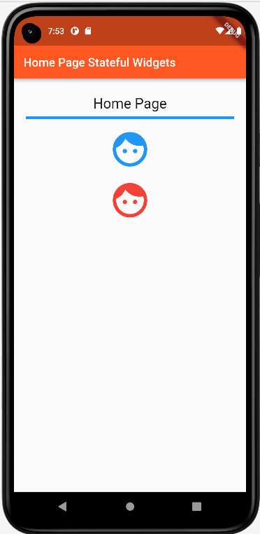
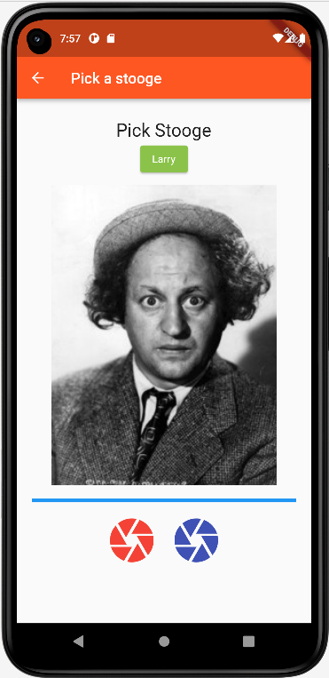
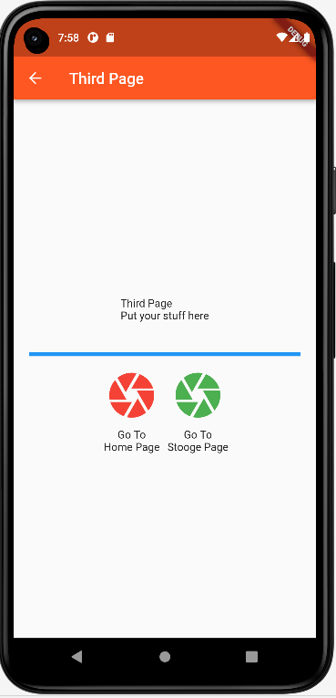

Stateful and Stateless Routes
Key Ideas
- Key Widgets
- Material App
- Scaffold
- IconButton
- Image.Asset
- ElevatedButton
Routes
Routes are an attribute in the Material App Widget. They allow for the creation of multiple “pages” in a Flutter App.
Images
Images need to be listed in the asset section of the pubsec.yaml file.
pubsec.yaml
Pay particular attention to spacing. Being even one space out of alignment will cause errors
flutter:
# The following line ensures that the Material Icons font is
# included with your application, so that you can use the icons in
# the material Icons class.
uses-material-design: true
# To add assets to your application, add an assets section, like this:
assets:
# - images/a_dot_burr.jpeg
- images/curly.jpg
- images/larry.jpg
- images/moe.jpgLecture Code
Note that the ” device ” width can be found using the Mediaquery command. This is demonstrated on the third page.
// stateless and stateful routes
// aka stooge picker
// this second page will allow the user
// to cycle through the three stooges
// on a button click
import 'package:flutter/cupertino.dart';
import 'package:flutter/material.dart';
void main() {
runApp(MaterialApp(home: const HomePage(), routes: <String, WidgetBuilder>{
"/HomePage": (BuildContext context) => const HomePage(),
"/SecondPage": (BuildContext context) => const SecondPage(),
"/ThirdPage": (BuildContext context) => const ThirdPage()
}));
}
class HomePage extends StatefulWidget {
const HomePage({Key? key}) : super(key: key);
@override
_HomePage createState() => _HomePage();
}
class _HomePage extends State<HomePage> {
@override
Widget build(BuildContext context) {
return Scaffold(
appBar: AppBar(
title: const Text("Home Page Stateful Widgets"),
backgroundColor: Colors.deepOrange),
body: ListView(
padding: const EdgeInsets.symmetric(horizontal: 20.0),
children: [
Center(
child: Column(
mainAxisAlignment: MainAxisAlignment.center,
children: <Widget>[
const Text("\nHome Page", style: TextStyle(fontSize: 24.0)),
const Divider(height: 20, thickness: 5, color: Colors.blue),
IconButton(
icon: const Icon(Icons.face, color: Colors.blue),
iconSize: 70,
onPressed: () {
Navigator.of(context).pushNamed("/SecondPage");
}),
IconButton(
icon: const Icon(Icons.face, color: Colors.red),
iconSize: 70,
onPressed: () {
Navigator.of(context).pushNamed("/ThirdPage");
})
]))
],
));
}
}
class SecondPage extends StatefulWidget {
const SecondPage({Key? key}) : super(key: key);
@override
_SecondPage createState() => _SecondPage();
}
class _SecondPage extends State<SecondPage> {
String myStooge = "Larry";
var stoogeCounter = 0;
Color stoogeColor = Colors.lightGreen;
String larryPhoto = "images/larry.jpg";
String curlyPhoto = "images/curly.jpg";
String moePhoto = "images/moe.jpg";
String selectStooge = "images/larry.jpg";
Widget stoogePhoto(String selectStooge) {
return Padding(
padding: EdgeInsets.all(10.0),
child: Image.asset(selectStooge,
height: 400, width: 300, fit: BoxFit.cover));
}
@override
Widget build(BuildContext context) {
return Scaffold(
appBar: AppBar(
title: const Text("Pick a stooge"),
backgroundColor: Colors.deepOrange),
body: ListView(children: [
Column(
mainAxisAlignment: MainAxisAlignment.center,
children: <Widget>[
const Text("\nPick Stooge", style: TextStyle(fontSize: 24.0)),
ElevatedButton(
style: ElevatedButton.styleFrom(
primary: stoogeColor,
textStyle: const TextStyle(color: Colors.white)),
onPressed: changeStooge,
child: Text(myStooge)),
stoogePhoto(selectStooge),
const Divider(
height: 20.0,
indent: 20.0,
endIndent: 20.0,
thickness: 5.0,
color: Colors.blue),
Row(
mainAxisAlignment: MainAxisAlignment.center,
children: [
IconButton(
icon: const Icon(Icons.camera, color: Colors.red),
iconSize: 70,
onPressed: () {
Navigator.of(context).pushNamed("/HomePage");
}),
IconButton(
icon: const Icon(Icons.camera, color: Colors.indigo),
iconSize: 70,
onPressed: () {
Navigator.of(context).pushNamed("/ThirdPage");
})
],
)
])
]));
} // widget build
void changeStooge() {
//Increment the counter
stoogeCounter++;
// set the state of several variables
// note using the remamind '%' to determine
// which stooge
setState(() {
if ((stoogeCounter % 3) == 0) {
myStooge = "Larry";
stoogeColor = Colors.blue;
selectStooge = larryPhoto;
} else if ((stoogeCounter % 3) == 1) {
myStooge = "Curly";
stoogeColor = Colors.orange;
selectStooge = curlyPhoto;
} else if ((stoogeCounter % 3) == 2) {
myStooge = "Moe";
stoogeColor = Colors.indigo;
selectStooge = moePhoto;
}
});
}
} // end of class
class ThirdPage extends StatelessWidget {
const ThirdPage({Key? key}) : super(key: key);
Widget goHome(BuildContext context) {
return (Column(children: [
IconButton(
icon: const Icon(Icons.camera, color: Colors.red),
iconSize: 70,
onPressed: () {
Navigator.of(context).pushNamed("/HomePage");
}),
const Text("Go To\nHome Page", textAlign: TextAlign.center)
]));
}
Widget goStooges(BuildContext context) {
return (Column(children: [
IconButton(
icon: const Icon(Icons.camera, color: Colors.green),
iconSize: 70,
onPressed: () {
Navigator.of(context).pushNamed("/SecondPage");
}),
const Text("Go To\nStooge Page", textAlign: TextAlign.center)
]));
}
@override
Widget build(BuildContext context) {
return Scaffold(
appBar: AppBar(
title: const Text("Third Page"),
backgroundColor: Colors.deepOrange),
body: Container(
width: MediaQuery.of(context).size.width,
padding:
const EdgeInsets.symmetric(vertical: 0.0, horizontal: 20.0),
child: Center(
child: Column(
mainAxisAlignment: MainAxisAlignment.center,
children: [
const Text("\nThird Page\nPut your stuff here\n\n"),
const Divider(height: 20, thickness: 5, color: Colors.blue),
Row(
mainAxisAlignment: MainAxisAlignment.center,
children: [goHome(context), goStooges(context)])
]))));
}
}Application Images


